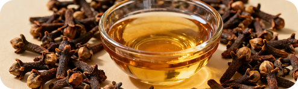
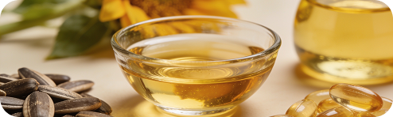

Botanical Oil
Botanical OilTea Tree Oil
A widely used essential oil in topical grooming formulas, included here for its long history in botanical skin and nail care products.

Botanical OilLemongrass Oil
A fresh, citrus-like oil used in select personal-care formulations alongside other plant-derived ingredients.
 Aromatic Oil
Aromatic OilLavender Oil
An aromatic plant oil commonly added to cosmetic sprays for its recognizable scent and its place in topical wellness blends.
 Skin-Conditioning Extract
Skin-Conditioning ExtractAloe Vera Leaf Extract
A familiar skincare ingredient widely included in cosmetic formulations for skin conditioning.
Conditioning Oil
Almond Oil
A plant-derived oil frequently used in skincare and cosmetic products to help condition the skin around the application area.

Botanical OilFlaxseed Oil
A seed-derived oil used in certain cosmetic formulations as a further plant-based component of the blend.